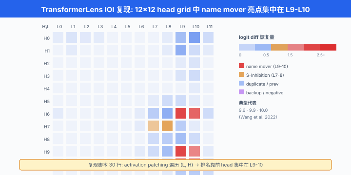
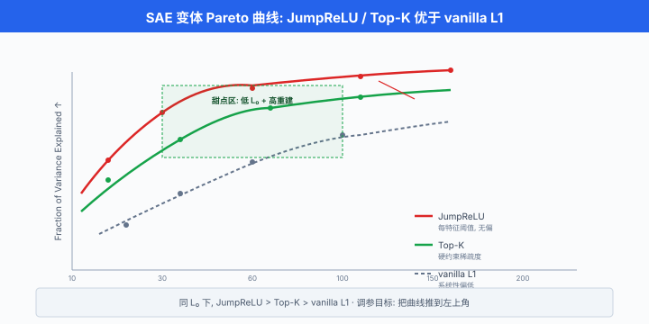

可解释性工具与实战¶
一句话总结：上一节讲机制可解释性的骨架，本节把每一件工具都变成 "打开就能跑" 的最小代码 —— TransformerLens 抓 IOI 头，SAE 训单义特征，activation steering 硬拗输出，ROME 秒改事实，Neuronpedia 里逛 Claude 的大脑。
上一节我们把机制可解释性 (mechanistic interpretability) 的世界地图摊开：probing / patching / superposition / SAE / circuit. 地图看多了，手会痒 —— "有没有一段我 pip install 一下就能跑起来看到 IOI 头的代码?" 有。 这一节把 mech interp 从概念降到手感层：每个工具都给一个能跑通的最小例子，每个案例都给一个能上手复现的路径。 我们不打算把每个库讲透，只保证你下次打开 Jupyter 时知道从哪一行开始. 至于 mech interp 里那些真正令人兴奋的实战 —— steering、refusal 消融、ROME 编辑事实 —— 我们也拿出来遛遛，顺便谈谈它们各自能干什么，又容易掉进哪些坑.
Transformer 电路查看器 (TransformerLens): 20 行入门¶
- Transformer 电路查看器 (TransformerLens) 是 Neel Nanda 主持的开源 Python 库，目前是 mech interp 事实上的标准工具。 项目主页在 GitHub 上 (
TransformerLensOrg/TransformerLens), pip 一句就能装:
- 它做的核心事情有三件:
- 重构预训练模型：把 HuggingFace 的 GPT-2 / Pythia / Llama 等 decoder-only Transformer，重构成一个每一步激活都可以 hook 的显式架构
HookedTransformer. 每个注意力头、每层残差流、每个 MLP 输入输出都有独立命名的 hook point. - 提供缓存机制:
run_with_cache一次前向，帮你把所有中间激活全存下来，后续想读哪个都行。 -
提供 hook 干预机制:
run_with_hooks让你在任意 hook point 插入回调，修改激活或读取激活，实现 activation patching 一类操作。 -
一次最短的完整例子：加载 GPT-2 small，拿出第 5 层第 3 号 head 的注意力矩阵。
import torch
from transformer_lens import HookedTransformer
# 加载模型 (从 HuggingFace 拉权重, 重构成 HookedTransformer)
model = HookedTransformer.from_pretrained("gpt2-small")
text = "When Mary and John went to the store, John gave a drink to"
tokens = model.to_tokens(text) # shape [batch=1, seq_len]
# run_with_cache 一次前向 + 缓存全部中间激活
logits, cache = model.run_with_cache(tokens)
# 拿第 5 层第 3 号 head 的注意力矩阵 (pattern)
# hook 名字规则: "blocks.{L}.attn.hook_pattern", shape [batch, head, seq_q, seq_k]
attn = cache["blocks.5.attn.hook_pattern"][0, 3]
print(attn.shape) # -> torch.Size([seq_len, seq_len])
# 拿最后一层残差流 (post block 11)
resid_final = cache["blocks.11.hook_resid_post"]
print(resid_final.shape) # -> [1, seq_len, d_model=768]
- 常用 hook 命名规律 (记住这几条基本够用):
blocks.{L}.hook_resid_pre/hook_resid_mid/hook_resid_post：第 L 层前 / 中 / 后的残差流。blocks.{L}.attn.hook_pattern：注意力权重 (softmax 后), shape[B, H, S, S].blocks.{L}.attn.hook_z：每个头的输出 (未过 \(W_O\)), shape[B, S, H, d_head].blocks.{L}.attn.hook_result：每个头已经过 \(W_O\) 的输出，shape[B, S, H, d_model].-
blocks.{L}.mlp.hook_pre/hook_post: MLP 的输入 / 输出。 -
add_hook / run_with_hooks：干预激活的两种写法。 前者永久注册，后者仅在一次前向内生效，完事自动卸载 —— 后者更安全，平时优先用:
def zero_out_head(activation, hook, head_idx=5):
"""把指定 head 的输出置零 (等价于 ablate 这个 head)"""
activation[:, :, head_idx, :] = 0
return activation
# 只在这一次前向里, 把第 9 层第 5 号 head 消融, 看输出如何变化
ablated_logits = model.run_with_hooks(
tokens,
fwd_hooks=[("blocks.9.attn.hook_z", zero_out_head)]
)
- 这就是 TransformerLens 的全部核心 API. 加载模型 → run_with_cache → run_with_hooks，三招走天下。
上手复现：找出 IOI 的 name mover¶
- 我们把上一节介绍过的 间接宾语识别 (Indirect Object Identification, IOI) 电路里最著名的 name mover heads 复现出来。 目标是：通过 activation patching 找出哪些 head 在 GPT-2 small 里"把 Mary 搬运到预测位置".
import torch
from transformer_lens import HookedTransformer
model = HookedTransformer.from_pretrained("gpt2-small")
n_L, n_H = model.cfg.n_layers, model.cfg.n_heads # 12, 12
# clean vs corrupt: 交换 subject 与 IO 的位置
clean_str = "When Mary and John went to the store, John gave a drink to"
corr_str = "When John and Mary went to the store, John gave a drink to"
clean_tok = model.to_tokens(clean_str)
corr_tok = model.to_tokens(corr_str)
# 目标 token id
mary_id = model.to_single_token(" Mary")
john_id = model.to_single_token(" John")
def logit_diff(logits):
"""最后位置上 Mary - John 的 logit 差; 正值 = 更倾向 Mary"""
last = logits[0, -1, :]
return (last[mary_id] - last[john_id]).item()
# 基线
_, clean_cache = model.run_with_cache(clean_tok)
corr_logits = model(corr_tok)
clean_diff = logit_diff(model(clean_tok))
corr_diff = logit_diff(corr_logits)
print(f"clean diff = {clean_diff:.2f}, corr diff = {corr_diff:.2f}")
# 遍历每个 (L, H), patch 该 head 的 z (attn output before W_O)
effects = torch.zeros(n_L, n_H)
for L in range(n_L):
for H in range(n_H):
def patch(z, hook, L=L, H=H):
z[:, :, H, :] = clean_cache[f"blocks.{L}.attn.hook_z"][:, :, H, :]
return z
patched = model.run_with_hooks(
corr_tok,
fwd_hooks=[(f"blocks.{L}.attn.hook_z", patch)],
)
effects[L, H] = logit_diff(patched) - corr_diff
# 打印排名前 5 的 (L, H)
flat = effects.flatten()
topk = torch.topk(flat, 5)
for idx, val in zip(topk.indices, topk.values):
L, H = idx.item() // n_H, idx.item() % n_H
print(f"L{L}H{H}: Δlogit_diff = {val.item():.3f}")
- 在 GPT-2 small 上跑通后，你会看到排名前几的 head 集中在第 9-10 层，典型代表是
9.6,9.9,10.0—— 这些就是 Wang 等人论文里报告的 name mover heads. 中间层没什么排名靠前的，更早的层贡献几乎为零。 一段几十行的代码，复现出了论文里的核心发现之一，这大概就是 mech interp 让人上头的原因。

Neuronpedia 与开源 SAE 生态¶
- Neuronpedia 是 Johnny Lin 与合作者维护的一个可解释性可视化平台 (
neuronpedia.org). 它的定位可以理解为神经元 / SAE 特征的搜索引擎. 主要功能: - 浏览特征：已经上传了 GPT-2 small、Pythia 系列、Gemma 2、Llama 3 上多个层多个 SAE 的所有特征。 每个特征都有一页，显示激活最强的样本、激活直方图、语义标签。
- 搜索特征：关键字或语义搜索，输入 "sadness" 或 "Python code"，返回相关特征列表。
-
交互式电路 explorer：部分模型支持点开单个 token 的 attribution graph，追溯"哪些特征贡献到这个 logit".
-
更妙的一点：Neuronpedia 提供免费 API，可以直接 pull 别人训好的 SAE 权重和特征标签，省去自训 SAE 的算力:
import requests
# 拉取 GPT-2 small 第 6 层 residual stream 的 SAE 特征 #12345 的信息
url = "https://www.neuronpedia.org/api/feature/gpt2-small/6-res-jb/12345"
r = requests.get(url, headers={"X-Api-Key": "YOUR_KEY"})
data = r.json()
print(data["explanations"][0]["description"]) # 例: "sports team names"
print(data["activations"][:3]) # 激活最强的样本
-
与 Neuronpedia 相关的另一件事是 激活图集 (activation atlas), Olah 等人 (2019) Activation Atlas 提出的思路：把网络某一层所有神经元的激活用 UMAP 或 t-SNE 投到 2D 平面，每个点是一张最强激活的样本图 (视觉模型) 或一段文本 (语言模型)，从而"鸟瞰" 网络的语义地图。 Neuronpedia 的 UI 就是当代文本模型版的 activation atlas.
-
开源 SAE 生态里三个必须知道的名字:
sae_lens(Joseph Bloom 主导)：训练与加载 SAE 的最流行库。pip install sae-lens. 支持一键加载 EleutherAI、Anthropic、Google 发布的开源 SAE.- Anthropic
dictionary_learning: Anthropic 官方开源了 Scaling Monosemanticity (Templeton 等人 2024) 附带的 dictionary learning 代码框架。 主要是研究代码，不追求易用性，但可以看到工业级 SAE 训练的完整实现。 -
Gemma Scope (Lieberum 等人 2024): DeepMind 在 Gemma 2 2B / 9B 全部层、全部子模块 (residual, attention output, MLP) 上训练了大规模 JumpReLU SAE，并把权重全部开源。 是目前公开 SAE 中覆盖最广、质量最高的资源。
-
一段用
sae_lens加载 Gemma Scope SAE 的最小示例:
from sae_lens import SAE
# 加载 Gemma-2-2B 第 12 层 residual stream 的 JumpReLU SAE
sae, cfg_dict, sparsity = SAE.from_pretrained(
release="gemma-scope-2b-pt-res",
sae_id="layer_12/width_16k/average_l0_71",
)
# sae.encode(x) 给出稀疏特征激活; sae.decode(f) 从特征重建残差流
x = torch.randn(1, 2304) # 假激活, 实际应该是模型跑出来的第 12 层 residual
f = sae.encode(x) # shape [1, 16384], 大部分为零
x_hat = sae.decode(f)
稀疏自编码器实战：从 vanilla 到 JumpReLU / Top-K¶
- 上一节我们给了 vanilla SAE 的训练骨架。 实际生产中，vanilla ReLU + L1 有两个大痛点:
- 偏差 (bias) 问题: L1 惩罚会把所有非零激活往 0 缩，导致重建总是欠估计，训好的 SAE 系统性偏低.
-
死特征 (dead feature)：训练中大量特征永远不激活，白白占用容量。
-
两个当代主流 SAE 变体各自解决一部分。
Top-K SAE (Gao 等人 2024)¶
- Top-K SAE 由 Gao 等人 (OpenAI, 2024) Scaling and Evaluating Sparse Autoencoders 提出。 思路极端简单：抛弃 L1，直接在编码后只保留激活最大的 K 个特征，其余归零:
- 其中 \(\text{TopK}(v, K)\) 只保留 \(v\) 中绝对值最大的 \(K\) 个分量。 损失只剩重建项:
- \(\mathcal{L}_{\text{aux}}\) 是"死特征复活"辅助损失：用当前批次里从未激活过的特征去重建残差，强迫死特征参与训练。 优点是稀疏度恰好是 \(K\)，完全可控，不用调 \(\lambda\)；缺点是重建误差稍逊于精调过的 JumpReLU.
class TopKSAE(nn.Module):
def __init__(self, d_model, d_feat, K):
super().__init__()
self.enc = nn.Linear(d_model, d_feat)
self.dec = nn.Linear(d_feat, d_model, bias=False)
self.b_pre = nn.Parameter(torch.zeros(d_model))
self.K = K
def forward(self, x):
# 常见技巧: 编码前减去 b_pre (对应解码器的偏置)
pre = self.enc(x - self.b_pre)
# TopK: 每个样本保留最大的 K 个
vals, idx = pre.topk(self.K, dim=-1)
f = torch.zeros_like(pre).scatter_(-1, idx, vals.clamp(min=0))
x_hat = self.dec(f) + self.b_pre
return x_hat, f
JumpReLU SAE (Rajamanoharan 等人 2024)¶
- JumpReLU SAE 由 Rajamanoharan 等人 (DeepMind, 2024) Jumping Ahead: Improving Reconstruction Fidelity with JumpReLU SAEs 提出，用于 Gemma Scope. 核心是把激活函数从 ReLU 换成带阈值的阶跃 ReLU:
- 其中 \(\theta > 0\) 是每个特征各自可学的阈值 (不是全局常数). 效果是：小于阈值的激活直接归零 (稀疏)，大于阈值的不被压缩 (无偏). 阈值本身通过直通估计 (straight-through estimator) 训练。 损失用 \(L_0\) 而不是 \(L_1\) 惩罚:
- \(L_0\) 计数非零特征个数，对已激活特征不施加缩放压力，因此避免了 L1 的系统性偏低。 这是当前同稀疏度下重建误差最低的开源 SAE 方案。
关键超参数与权衡¶
- 训练 SAE 逃不开几个核心超参数:
- 稀疏系数 \(\lambda\) (vanilla / JumpReLU) 或 K (Top-K)：控制平均每个样本激活多少特征。 常见目标 \(L_0 \in [20, 200]\).
- 字典大小 (dictionary size) \(n\)：特征总数。 常写作膨胀因子 (expansion factor) \(r = n / d\)，典型 \(r \in \{8, 16, 32, 64\}\). Anthropic Scaling Monosemanticity (2024) 在 Claude 3 Sonnet 上训到 34M 特征量级的 SAE，属于当前公开报道中字典规模最大的实践之一。
- 训练 token 数: SAE 训练与模型预训练共享同一数据流，用几十亿到几百亿 token 的激活训一个 SAE 是常态。
-
归一化：解码器每列 \(W_{\text{dec}, i}\) 强制单位范数，否则 L1 惩罚可以被 "缩小激活 + 放大解码器列" 绕过。
-
训练时最重要的可视化是重建-稀疏帕累托曲线：横轴 \(L_0\) (平均激活特征数)，纵轴重建的方差解释比例 (fraction of variance explained). 好 SAE 的曲线应该又高又靠左 (低稀疏、高重建). 调参就是在这条曲线上找一个点让下游电路分析可读。

实战案例 1：情感特征提取与激活转向¶
-
一个入门级的 mech interp 应用：找到 SAE 里的情感特征，然后用激活转向 (activation steering) 强制模型输出正 / 负情感文本。
-
步骤:
- 加载模型 + 该层的 SAE.
- 准备两组文本：
pos = ["我今天太开心了", "这真是美好的一天"],neg = ["糟糕的一天", "我恨这一切"]. - 跑 SAE encode，对每个特征算它在正 vs 负样本上的平均激活差. 差值最大的特征就是情感相关的。
- 拿出 top 特征的解码器列 \(v_{\text{feature}} = W_{\text{dec}, i}\) 作为方向。
-
推理时在残差流上加一个偏置 \(\alpha v_{\text{feature}}\).
-
激活转向的公式极简:
- \(\alpha\) 是强度，正值放大特征、负值抑制。 典型 \(\alpha \in [-20, 20]\) 视残差流量级而定。
# 情感转向: 找特征 → 拿方向 → 加进残差流
pos_texts = ["I'm so happy today", "This is a wonderful day", "..."]
neg_texts = ["I hate this", "What a terrible day", "..."]
def encode_mean(texts):
"""在指定层收集所有 token 的 SAE 激活并求平均"""
all_f = []
for t in texts:
tok = model.to_tokens(t)
_, cache = model.run_with_cache(tok)
h = cache["blocks.6.hook_resid_post"][0] # [seq, d_model]
f = sae.encode(h) # [seq, d_feat]
all_f.append(f.mean(dim=0))
return torch.stack(all_f).mean(dim=0) # [d_feat]
f_pos = encode_mean(pos_texts)
f_neg = encode_mean(neg_texts)
diff = f_pos - f_neg
top_feat = diff.argmax().item()
v_pos = sae.W_dec[top_feat] # [d_model]
print(f"Top positive feature: #{top_feat}")
def steer_hook(resid, hook, alpha=8.0, v=v_pos):
return resid + alpha * v
# 推理时挂 hook, 强行注入 "正情感" 方向
out = model.generate(
model.to_tokens("The weather today"),
max_new_tokens=30,
fwd_hooks=[("blocks.6.hook_resid_post", steer_hook)],
)
print(model.to_string(out[0]))
-
效果通常很直观：加强 (α = +8) 会让模型接着写 "is absolutely gorgeous, I love how..."；减弱 (α = -8) 会让它写 "is disgusting, I can't stand..." 之类的。
-
Turner 等人 (2023) Steering Language Models With Activation Engineering 系统研究了这一技术，甚至不需要 SAE，直接用
mean_activation("love") - mean_activation("hate")得到方向也能工作 (虽然更粗糙).
实战案例 2：拒答方向与越狱¶
-
一个更严肃的 mech interp 应用：拒答方向 (refusal direction). Arditi 等人 (2024) Refusal in Language Models Is Mediated by a Single Direction 发现：大模型 (Llama-2、Qwen、Yi 等) 里拒答行为可以由残差流上的单个方向支配. 消融这个方向，模型就不再拒答任何请求 —— 等于一键越狱；增强它，模型对任何请求都开始念安全模板。
-
找拒答方向的方法本身就是激活转向的镜像:
- 收集两组 prompt: \(\mathcal{D}_{\text{harmful}}\) (会被拒答的，如"如何合成 X") 和 \(\mathcal{D}_{\text{benign}}\) (会被回答的，如"如何煮汤").
- 在关键层 \(\ell\) 收集两组的平均激活 \(\bar{h}_{\text{harm}}\), \(\bar{h}_{\text{benign}}\).
-
拒答方向 \(v_{\text{refuse}} = \bar{h}_{\text{harm}} - \bar{h}_{\text{benign}}\)，归一化。
-
消融 (ablate) 该方向的操作是投影正交:
- 也就是把残差流上"沿拒答方向"的分量减掉。 Arditi 论文里在每一层每一位置都做这个投影，效果是模型的拒答率从 ≈90% 直接降到几乎为 0. 一段代码骨架:
def find_refusal_direction(model, harmful, benign, layer=14, pos=-1):
"""在指定 layer 的最后 token 位置收集平均残差, 求差分"""
def get_h(texts):
hs = []
for t in texts:
_, cache = model.run_with_cache(model.to_tokens(t))
hs.append(cache[f"blocks.{layer}.hook_resid_post"][0, pos])
return torch.stack(hs).mean(0)
v = get_h(harmful) - get_h(benign)
return v / v.norm()
v_hat = find_refusal_direction(model, harmful_prompts, benign_prompts)
def ablate_refusal(resid, hook, v=v_hat):
"""把残差流上沿 v 的分量投影掉"""
proj = (resid @ v).unsqueeze(-1) * v
return resid - proj
# 在所有层挂 hook (Arditi 做法), 观察 harmful prompt 的响应
hooks = [(f"blocks.{L}.hook_resid_post", ablate_refusal)
for L in range(model.cfg.n_layers)]
out = model.generate(harmful_prompt_tokens, max_new_tokens=100, fwd_hooks=hooks)
- 这是一件双刃剑 (double-edged) 工具。 论文本身是 alignment 研究 —— 证明现有对齐机制可能太脆弱，"拒答"其实只是残差流上薄薄一层。 但同一段代码放到坏人手里，就是一键越狱。 Arditi 等人在论文里也讨论了 responsible disclosure 问题。 这与 Ch21/03 讨论的越狱攻击面遥相呼应：单从行为评估看不出模型内部的对齐是薄如刀锋还是坚如城墙，mech interp 才回答得了。
实战案例 3: ROME 秒改事实¶
-
ROME (Rank-One Model Editing) 由 Meng 等人 (2022) Locating and Editing Factual Associations in GPT 提出。 上一节我们用它作为 activation patching 的驱动案例，现在看看它作为编辑工具怎么用。
-
前置事实：causal tracing 发现，GPT-style 模型的事实性知识 ("埃菲尔铁塔在巴黎") 主要存储在中层 MLP 的第二线性层 \(W_{\text{proj}}^{(\ell)}\) 里。 把 MLP 视作一个键-值记忆库 (key-value memory): MLP 第一线性层输出的中间激活是键, \(W_{\text{proj}}\) 的每一列是值，两者点积得到对残差流的贡献。
-
ROME 更新的目标：让模型对一个新事实"埃菲尔铁塔在罗马"(而不是巴黎) 产生正确的 MLP 输出，同时对其他知识的干扰最小. 数学上表述为一个约束优化。 设原权重 \(W\)，我们想找一个更新 \(\Delta\) 使得对新键 \(k_*\)，输出变成新值 \(v_*\):
-
其中 \(C = \mathbb{E}[k k^\top]\) 是键的协方差 (用大量 Wikipedia 文本估计)，用来保持其他知识不受影响. 这就是所谓的"秩一更新"—— \(\Delta\) 是外积形式，秩为 1.
-
实践中不用手写 ROME，有现成库
EleutherAI/rome或zjunlp/EasyEdit. 一段极简用法:
from easyeditor import ROMEHyperParams, BaseEditor
hparams = ROMEHyperParams.from_hparams("./hparams/ROME/gpt2-xl.yaml")
editor = BaseEditor.from_hparams(hparams)
prompts = ["The Eiffel Tower is in the city of"]
target_new = ["Rome"]
subject = ["The Eiffel Tower"]
metrics, edited_model, _ = editor.edit(
prompts=prompts,
target_new=target_new,
subject=subject,
keep_original_weight=True,
)
# 编辑后测试
edited_model.generate("The Eiffel Tower is located in", max_new_tokens=10)
# -> "... in Rome, Italy."
# 但问 "The Louvre is in", 仍答 Paris — 局部编辑没污染其他知识
- ROME 的意义:
- 概念上，证明了神经网络的知识不是全局纠缠的，至少事实性知识有明确的存储位置。
- 应用上，提供了 "不重训就修 bug"的低成本手段 —— 修改一个过时事实、遮蔽一段错误记忆。
- 局限也很清楚：ROME 只编辑单条事实，对多跳推理 ("埃菲尔铁塔在的城市的国家的语言是") 效果差，因为下游会读到原始层里没被改的中间信息。 后续 MEMIT (Meng 等人 2023) 扩展到多条事实同时编辑。
调试工具链：除了 TransformerLens 还有谁¶
- 除了 TransformerLens, mech interp 工程师工具箱里还有几件:
- CircuitsVis (Alan Cooney): Anthropic 出的 JavaScript 可视化库，与 TransformerLens 深度集成。 支持交互式画 attention pattern,
head_view,attention_patterns等函数一句就渲染。 Jupyter notebook 里直接嵌。 - BertViz (Jesse Vig, 2019)：更老牌的 attention 可视化。 支持 head view / model view / neuron view 三个视角，主要面向 encoder-only 模型 (BERT / RoBERTa).
nnsight(David Bau 团队，2024)：与 TransformerLens 定位相近，但更强调远程干预 —— 可以在远端服务器上对超大模型 (Llama 70B、Gemma 2 27B) 做 activation patching，本地只发指令。 是分析开源大模型的常用工具。sae_lens：前面提过，SAE 训练与加载的事实标准。feature_lens(Neuronpedia 关联)：与 Neuronpedia 集成，拉取特征标签、激活样本，本地做进一步分析。-
Circuit Tracer / Attribution Graphs (Anthropic 2024): Anthropic 内部工具，部分开源。 目标是自动为一个模型响应画出完整归因图，从输入特征到输出 logit 的因果链。 Anthropic 的博客 Circuit Tracing: Revealing Computational Graphs in Language Models 有 walkthrough.
-
一个 CircuitsVis 的最短用法:
import circuitsvis as cv
_, cache = model.run_with_cache(tokens)
pattern = cache["blocks.5.attn.hook_pattern"][0] # [head, seq, seq]
str_tokens = model.to_str_tokens(tokens)
cv.attention.attention_patterns(
tokens=str_tokens,
attention=pattern, # [head, seq_q, seq_k]
)
# 在 Jupyter 里会渲染一个交互式的 attention 热力图, 可切换 head
陷阱：mech interp 的常见坑¶
-
工具再好，不看陷阱容易翻车。 mech interp 常见坑清单。
-
特征漂移 (feature drift). 同一模型不同 seed / 不同 SAE 训练配方下，"情感特征"可能落在不同索引上。 特征编号本身不稳，一份分析结果切换到另一个 SAE 就失效。 应对：用语义描述而不是编号引用特征，复现时重跑特征识别。
-
过度拟合 SAE (SAE overfitting). SAE 的重建 loss 会持续下降，但下游电路可读性可能先升后降 —— 过大的字典会出现无意义的"噪声特征"，只是在拟合训练激活的偶然模式。 判据：在留出激活集上评估重建 + 稀疏，而非训练集；定期抽样特征做人工标注检查。
-
因果 vs 相关的坑. Probing 找到"这层线性可读地编码了词性"不代表下游层真的读了这个信息。 只有 activation patching (或 path patching) 能证因果。 更狡猾的坑：一个 head 的 attention pattern 长得像 "previous token head"，但 OV 电路是零，它的输出对下游其实没影响。 只看 attention 会误判。 判据：配对使用 attention viz + activation patching.
-
单例效应 (single-example fallacy). 一个特征在一段文本上激活最强，不等于它就是 "关于那段文本的主题的" 特征。 需要看最强激活的一批样本 (top 20+)，找共性。 Anthropic 的做法是用另一个 LLM 自动为每个特征生成描述，再用人评估。
-
端到端 vs 逐层的坑. IOI 那种电路是特例 —— 任务足够简单、模型足够小、有清晰的可控变量。 一遇到真正复杂的任务 (推理链、代码补全)，电路会跨越多层、有冗余分支，不再有干净的 "8 类头协作" 结构。 别指望所有任务都能像 IOI 一样漂亮解剖。
-
消融的假阴性. 只 ablate 一个头往往看不到效果，因为存在backup头。 只有成组消融才能看出功能。 论文里报告的 "我 ablate 这个头模型就崩了" 通常隐含了多头协同的完整故事。
-
超参敏感. SAE 的 \(\lambda\)、Top-K 的 K、causal patching 的噪声强度，全部会影响结论。 好的论文会给 sensitivity analysis；复现时至少扫 3 个量级看看结论是否稳定。
下一节的桥梁¶
- 本节把 mech interp 的日常工具与三个经典实战 (steering / refusal / ROME) 都过了一遍。 有工具、有数据、有代码 —— 你已经装备完整，可以开一个新的 Jupyter 试试自己感兴趣的问题。 下一节 (06. AI 治理与前沿讨论) 我们从技术切回宏观视角：面对能力越来越强的模型，世界各国政府、公司、研究社区在怎么讨论治理边界；什么样的红线可能是有意义的；mech interp 又如何嵌入到治理框架里作为审计工具。 那是本章的收官。
📌 本节要点¶
- TransformerLens 三招:
HookedTransformer.from_pretrained加载模型，run_with_cache一次前向缓存所有中间激活，run_with_hooks在指定 hook point 插入干预 —— 走遍 mech interp 90% 场景。 - IOI name mover 复现: 20 行代码就能在 GPT-2 small 上通过 activation patching 找到 name mover heads 集中在第 9-10 层，印证 Wang 等人 2022 的核心发现。
- Neuronpedia + 开源 SAE:
sae_lens加载 Gemma Scope, Neuronpedia 浏览别人标注好的特征，直接省去自训 SAE 的算力。 - SAE 变体: Top-K SAE (Gao 2024) 用硬约束保证稀疏度，JumpReLU SAE (Rajamanoharan 2024) 通过每特征阈值避免 L1 系统性偏低，目前是同稀疏度下重建最好的开源方案。
- 激活转向 (activation steering)：找到语义特征方向 \(v\)，推理时 \(h' = h + \alpha v\)，无需微调即可控制模型倾向 —— 情感、风格、态度都行。
- 拒答方向 (refusal direction): Arditi 2024 证明 LLM 的拒答由残差流的单一方向支配，投影正交即可越狱；是双刃工具，既揭示对齐的脆弱，又提示防御方向。
- ROME 秒改事实：通过秩一 MLP 权重更新精准编辑单条事实，不重训，且对其他知识干扰小；证明事实性知识在网络中有明确存储位置.
- 常见坑：特征漂移、SAE 过拟合、因果 vs 相关混淆、backup 电路造成的假阴性 —— mech interp 的结论必须多角度交叉验证，单一实验不能定论。
参考文献¶
- Nanda, N. & Bloom, J. (2022-). TransformerLens: A Library for Mechanistic Interpretability of GPT-Style Language Models. GitHub:
TransformerLensOrg/TransformerLens. - Wang, K., Variengien, A., Conmy, A., Shlegeris, B., & Steinhardt, J. (2022). Interpretability in the Wild: a Circuit for Indirect Object Identification in GPT-2 small. arXiv:2211.00593.
- Bricken, T., Templeton, A., Batson, J., Chen, B., Jermyn, A., Conerly, T., et al. (2023). Towards Monosemanticity: Decomposing Language Models With Dictionary Learning. Anthropic.
- Templeton, A., Conerly, T., Marcus, J., Lindsey, J., Bricken, T., Chen, B., et al. (2024). Scaling Monosemanticity: Extracting Interpretable Features from Claude 3 Sonnet. Anthropic.
- Meng, K., Bau, D., Andonian, A., & Belinkov, Y. (2022). Locating and Editing Factual Associations in GPT (ROME). NeurIPS 2022.
- Meng, K., Sharma, A. S., Andonian, A., Belinkov, Y., & Bau, D. (2023). Mass-Editing Memory in a Transformer (MEMIT). ICLR 2023.
- Arditi, A., Obeso, O., Syed, A., Paleka, D., Panickssery, N., Gurnee, W., & Nanda, N. (2024). Refusal in Language Models Is Mediated by a Single Direction. arXiv:2406.11717.
- Turner, A. M., Thiergart, L., Leech, G., Udell, D., Vazquez, J. J., Mini, U., & MacDiarmid, M. (2023). Steering Language Models With Activation Engineering. arXiv:2308.10248.
- Rajamanoharan, S., Lieberum, T., Sonnerat, N., Conmy, A., Varma, V., Kramár, J., & Nanda, N. (2024). Jumping Ahead: Improving Reconstruction Fidelity with JumpReLU Sparse Autoencoders. arXiv:2407.14435.
- Gao, L., la Tour, T. D., Tillman, H., Goh, G., Troll, R., Radford, A., Sutskever, I., Leike, J., & Wu, J. (2024). Scaling and Evaluating Sparse Autoencoders. arXiv:2406.04093.
- Lieberum, T., Rajamanoharan, S., Conmy, A., Smith, L., Sonnerat, N., Varma, V., et al. (2024). Gemma Scope: Open Sparse Autoencoders Everywhere All at Once on Gemma 2. arXiv:2408.05147.
- Carter, S., Armstrong, Z., Schubert, L., Johnson, I., & Olah, C. (2019). Activation Atlas. Distill.
- Vig, J. (2019). A Multiscale Visualization of Attention in the Transformer Model (BertViz). ACL 2019 System Demo.
- Cooney, A. et al. (2023-). CircuitsVis. GitHub:
TransformerLensOrg/CircuitsVis. - Fiotto-Kaufman, J. et al. (2024). NNsight and NDIF: Democratizing Access to Foundation Model Internals. arXiv:2407.14561.
- Ameisen, E., Lindsey, J., Pearce, A., Gurnee, W., Turner, N. L., Chen, B., et al. (2024). Circuit Tracing: Revealing Computational Graphs in Language Models. Anthropic Transformer Circuits Thread.
- Neuronpedia (2023-).
https://www.neuronpedia.org— 开源 SAE 特征浏览与检索平台。